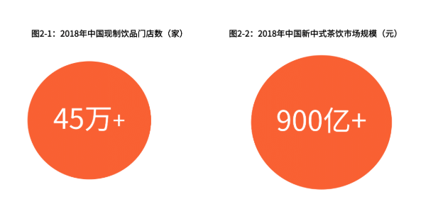
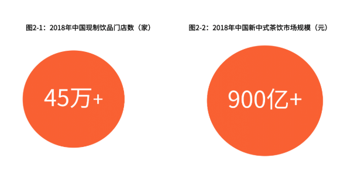

奶茶的来源
世界奶茶发展史：源起西藏，兴于欧洲，回归东方
奶茶起源于中国西藏，西藏人民首次将奶和茶融合在一起。随着丝绸之路的开通，奶茶被带入了印度。印度人民根据饮食文化差异，在奶茶中加入香辛料来提升口感。殖民地时期，西方列强将奶茶带回了各自的国家，稍加修改，形成了荷式奶茶和英式奶茶
荷兰式奶茶
荷兰人由于不喜欢印度奶茶的辛烈味，于是混合不同品种的茶来替代香辛料制作奶茶，并加入枫糖作为调味剂，这也是现代奶茶的雏形和基本配方。荷式奶茶中“奶”的风味浓郁，深受欧洲大陆人民喜爱，与欧洲饮食习惯相结合，形成了独特的欧式风味.
台湾奶茶是荷兰式奶茶的一个分支。荷兰对台湾殖民统治期间，将荷兰式奶茶带入台湾。台湾人民智慧性的创新，将奶茶中加入“珍珠”，即一种粉圆，即由地瓜粉、木薯粉等制成的一种粉圆。煮熟的粉圆外观乌黑晶透，以“珍珠”命名，由此台湾奶茶便以“珍珠奶茶”著称。
英式奶茶
1680年，在荷式奶茶的基础上，约克公爵夫人又加入了鲜奶、砂糖，酿造了英式奶茶。英式奶茶与荷兰式奶茶最大的区别是英式奶茶主要供皇家贵族和上流社会享用，是一种身份地位的象征，因此英式奶茶取名也很讲究，比如：伯爵奶茶、皇室奶茶、鸳鸯奶茶等。
港式奶茶是英式奶茶的一个分支，价格更为亲民，随港式茶餐厅的流行而风靡，“丝袜奶茶”、“鸳鸯奶茶”为其典型代表。“丝袜奶茶”是由于滤网长期使用，颜色暗沉，远看似肉色丝袜而得名；“鸳鸯奶茶”则将丝袜奶茶与咖啡相融合，兼具奶茶的浓滑与咖啡的香苦。
中国茶饮连锁：进阶迭代，品质消费，健康升级
中国茶饮连锁行业的发展主要经历了三个阶段：
第一阶段：粉末时代（1990-1995）
台湾人率先将粉末式奶茶引入中国大陆，引起了一波“奶茶风”。这类初期的奶茶店面积为3-5平米，部分以小窗口形式存在。产品由各种粉末冲水调制而成，味道通常包括原味、草莓味、香芋味、西瓜味、芒果味等。这类奶茶不含茶也不含奶，是中国大陆茶饮连锁的初级阶段，业内称之为“粉末时代”。
第二阶段：街头时代（1995-2016）
原料演变、升级，开始遍布大街小巷。在这一阶段，出现了茶基底，即用茶末和茶渣制作基底茶，并将其装在茶桶里，每隔数小时进行更换。此时真的茶叶代替粉末出现在奶茶中，但奶还是以粉末为主。该阶段兴起的知名奶茶品牌有coco都可、Happy Lemo（快乐柠檬）等。
在第二阶段的后期，奶也有了一定的改革，出现了鲜奶。同时，商家为了增加关注度，在奶茶形式上也进行了创新，比如：新创了奶盖，将淡奶油打发并覆盖在纯茶上面，形成全新的形态及口感。
第三阶段：新中式茶时代（2015年至今）
随着消费升级的发展，奶茶更加注重品质，朝着精品茶饮方向迈进。 在原料选取上，更加健康。用上等的茶叶，辅之以不同的萃取方式，代替原有的碎末、茶渣，用新鲜的牛奶、进口的奶油、天然的动物奶油代替奶精，全方位提升奶茶的口感。品类不断丰富，加入各类新鲜水果成为水果茶。
在制作工艺上，更加专业。萃取设备的创新和新中式茶饮的发展相辅相成、相互促进。萃取设备的使用可实现茶叶萃取过程的标准化；而传统手工制作受制于员工培训与熟练程度，低效且难以保持口感一致性。萃取工艺上也进行了一定的革新，除了传统的热泡，还引入了冷泡、真空高压萃取等。新创的冷泡，不仅可以减少茶涩的口感，还可以减少茶单宁酸的释放，有利于对肠胃的保护。
在店面装修上，更加舒适。奶茶店普遍提升单店面积，从15-20㎡扩大到50~100㎡。在装修风格上，部分连锁店一改统一装修风格，为每家店单独设计装修主题，用优质产品和惬意环境的完美结合为顾客提供舒适体验。
新属性：休闲化、社交化、标签化
奶茶解渴属性淡化。发展初期，奶茶因价位较低且解热解渴而广为流行。夏日，一杯5-10元的冰爽现调奶茶，即可满足消费者现做的新鲜感又能解暑解渴。冬日，一杯热气腾腾的现调奶茶则可驱寒暖身。
消费升级背景下，新中式茶饮具备了休闲、社交属性。新中式茶饮满足了与人们对生活品质的追求，其消费过程亦是社交与休闲的过程。随着奶茶门店面积扩大，环境更加惬意，以及产品本身更健康，奶茶店成了聚会、逛街、看电影等休闲娱乐中的一个环节。消费者购买的不仅仅是产品本身的饮料功能，同时还有张弛有度、劳逸结合的社交价值和休闲价值。
从茶饮到生活方式和身份认同，新中式茶饮具备时尚标签属性；与新媒体的结合，标签属性强化。85、90后消费新势力是新中式茶饮的主力目标客群，该消费群体边际消费倾向高，注重生活品质与生活方式，强调个性，新中式茶饮充分满足了该类群体的身体认同，使之具备标签属性，新媒体营销则进一步强化了其标签性。
需求的旺盛、新媒体营销的助力，使喜茶、奈雪の茶等新中式茶饮龙头出现抢购、排队等现象。每当消费者排了长达1个小时以上的队伍并买到奶茶时，内心会油然而出一种自豪与骄傲感，属典型的“小确幸（微小而确定的幸福）”。在朋友圈、微博等公众平台晒新中式茶饮，既表达排队后的喜悦与激动，也为自己贴上时尚标签。
奶茶消费人群
寒冬凛冽，没有什么能比一杯热乎乎的奶茶更温暖了。
从小时候几元钱买一瓶开水速冲奶茶粉到现在午后点一份十几元外卖奶茶，方式在变，但始终不变的是喝奶茶的快乐。
近几年来，越来越多的奶茶品牌开在了大型商场和写字楼，几十元一杯而且名字复杂的新式连锁茶饮，不仅成了需要排队抢购的网红产品，甚至有向社交场所发展的趋势。
有数据统计，2019年中国现制茶饮的潜在市场规模预计将达到500亿元人民币；全国现制茶饮门店数量更是超过45万家。
在这一巨大的市场规模下，现制茶饮的生态环境也发生了根本性的改变，消费者对茶饮品牌商提出了更高的要求，喝奶茶，已经不单单是喝奶茶那么简单了。场景化、社交化的环境更能吸引消费者购买。
“一杯茶也可以成为时尚的标签”。在这样的背景下，一线城市的消费者更愿意为奶茶买单。在一天里，下午2点到6点是消费者最爱喝奶茶的时候，近八成消费者会在这个时间点一杯奶茶来慰劳自己。

今天心情不错，喝杯奶茶吧
下午上班有点困，喝杯奶茶吧
出门购物了，喝杯奶茶吧......
喝奶茶，不需要理由的，好吗？
网红奶茶店排行榜
益禾堂
益禾堂品牌隶属于武汉熠和餐饮管理有限公司，益禾堂总部设在武汉，已经在湖北、湖南、海南、河南、四川、广西、广东等地拥有600多家连锁直营店，公司秉承“精益求精，追求卓越”的企业精神和经营理念，不断追求产品创新和服务质量的精益求精，备受消费者的青睐。
答案奶茶
答案奶茶是一款神奇的茶饮,只要在心中默念5遍你的问题,揭开茶盖后问题的答案就会浮现在茶面上。河南盟否网络技术有限公司，精心主打答案，答案茶是有史以来一款可以为你寻找答案的神奇的茶饮无论任何问题。
一只酸牛奶
重庆一只酸奶牛品牌管理有限公司成立于2015年，负责全国“一只酸奶牛”品牌旗下的特色酸奶饮品连锁经营业务一只酸奶牛以云南大理来思尔特色酸奶为基料，经过特殊工艺现场加工出美味的酸奶饮品，通过连锁经营模式发展特色专卖店。
鹿角巷奶茶
TheAlley鹿角巷奶茶是知名连锁创意饮品品牌。台湾、上海、日本、加拿大、香港、马来西亚，风靡全球15座城市，众家网红争相分享、日本nhk电视台报导推荐，周杰伦监制电影一万公里的约定联名饮品。
1点点奶茶
1点点奶茶为了创造茶饮的新视界，多年前着手筹备，经过了不断挑战以“多一点坚持、多一点用心“的理念，要带给您更多的饮品享受!以您的需求为出发点...一怀简单饮品，存在着您无法想象的灵魂。
古茗奶茶
关于古茗奶茶：全国门店门头，全国1700多家门店门头为准，古茗茶饮拥有专业的饮品研发团队、完善的供应链体系和品控体系。汲取中国传统茶的精髓，结合现代拼配制茶理念，搭配专属产地的新鲜水果，呈现特有的古茗风味饮品。每天1杯，喝不腻。
超级乐茶
超级乐茶企业时代革命：不止一杯好茶！只要食物中有两百分之一是甜味，四百分之一是咸味，十三万分之一的酸味，人类的味蕾就能尝出它来。
茶百道
成都天润餐饮管理有限公司2010年成立于四川成都，茶百道是一家以纯正台式饮品为主打的特许经营连锁机构。公司以台式饮品的推广、研发、加盟为主营业务。经过短短7年的努力与发展，我司已具一定的规模及实力，现拥有11家自营店，及其加盟店共计200余家。
茶颜悦色
茶颜悦色尊崇“踏实、拼搏、责任”的企业精神，并以诚信、共赢、开创经营理念，创造良好的办公环境，以全新的管理模式，完善的技术，周到的服务，卓越的品质为生存根本。
琉璃鲸奶茶
我是琉璃鲸，我在等你......我曾在人海中遇见一个女孩，只是一面之缘，却从此难以忘怀。每个夜晚，我都会在梦里与她相见，她化成一只鲸，身披琉璃向我游来。我相信梦境与现实间有一款信物，能够让那些所爱之人相遇，琉璃鲸由此而来。
奶茶的销售
行业整体市场空间可观
茶饮在我国拥有深厚的文化基础，在我国已经延续了上千年。而现制奶茶和咖啡一样，都具有一定的成瘾性。奶茶因加入了牛奶、糖等配料，口感上更偏甜和醇厚，其味觉记忆较浅，不容易使人产生厌烦感。此外，经过十多年的发展，奶茶获得了大批忠实的女性受众，成为在逛街、休闲娱乐时的首选。因而，奶茶具有庞大的潜在消费者，前瞻产业研究院根据中国人口、城镇化率、奶茶价格等因素的综合估算，得出2018年我国奶茶市场容量在1000亿元左右。
奶茶价格出现分层趋势
2004年以来，有众多知名品牌相继入驻我国奶茶行业。2004年，CoCo都可进入中国疯狂扩张；2006年，快乐柠檬进驻上海手工制作鲜奶茶；2011年，1點點进驻，现煮奶茶推出，网红奶茶开始布局；至2015年，当红网红奶茶如喜茶、奈雪の茶、八波茶等的入驻，使得我国奶茶行业品牌格局初立。
而就当前我国网红奶茶价格来看，中国网红奶茶价格出现分层化的趋势，其中，奈雪の茶以30.7元的平均客单价，成为奶茶中的贵族；而知名网红奶茶1點點，平均客单价与奈雪の茶尚有差距，达13.5元。
从我国奶茶消费者消费区间看，根据艾媒调研数据显示，2018年我国奶茶行业中有超过50%的奶茶消费者可接受的价格范围在15~25元间，近70%的奶茶消费者会选择15元以上的奶茶饮品，可见奶茶消费较轻奢。而另一方面，76.1%的奶茶消费者每月消费奶茶仅1~5次奶茶，每个月喝奶茶超过10次的高频消费不到一成，消费者喝奶茶行为较为节制。
奶茶究竟有多火？近日，《美团外卖奶茶真香消费报告》对外披露，去年美团外卖奶茶订单量突破2.1亿单，远超咖啡品类的订单量，“奶茶”成为外卖平台上的热搜词，有望代替可乐成为白领午餐新伴侣。相对应的，2018年，美团平台上茶饮商户数量相比2017年翻了3倍。截至2018年第三季度，全国现制茶饮门店数已经达到41万家，一年内增长74%.
对于当代年轻人来说，一段关于奶茶的对话，往往就能开启一段友谊之路。
网上流传着一个奶茶定律：月均奶茶不超过5杯的人，可能没有真正的朋友。连喝果汁都要计算卡路里的女生们，却一次次对奶茶缴械投降。
奶茶的未来发展
随着奶茶行业的发展，中国奶茶品牌也打破了传统的台式奶茶一家独大的局面，越来越多的本土品牌逐渐崛起。同时，互联网在奶茶市场的发展中起着至关重要的作用，近两年几乎是“网红奶茶”的集中爆发期，各种奶茶通过网络的营销直接或者间接地带动了品牌的发展，这也让许多业内人士看到了网红经济的力量，并且大规模地进军网络渠道市场。
此外，2014年以来成立的奶茶品牌，例如喜茶、奈雪の茶等，都将自身定位为“新茶饮”，不再以粉末勾兑，主打现泡茶和新鲜牛奶的结合，店铺装修更精致，吸引了一众消费观念改变的年轻人。
据前瞻产业研究院发布的《中国奶茶行业市场需求与投资规划分析报告》统计数据显示，2018年一季度全国现制茶饮门店数量已达27万家，2018年二季度全国现制茶饮门店数量达到了34万家。截止2018年第三季度末，全国现制茶饮门店数量达到41万之多，一年增长了74%。CoCo都可、快乐柠檬、一点点、贡茶、喜茶等都是新茶饮领域的知名品牌。
知名品牌相继入驻中国奶茶行业
从消费区间看，超五成的奶茶消费者可接受的价格范围在15~25元间，近70%的奶茶消费者会选择15元以上的奶茶饮品，可见奶茶消费较轻奢。而另一方面，76.1%的奶茶消费者每月消费奶茶仅1~5次奶茶，每个月喝奶茶超过10次的高频消费不到一成，消费者喝奶茶行为较为节制。
新中式茶饮兴起，市场规模超900亿元
iiMedia Research（艾媒咨询）数据显示，2018年中国现制饮品门店数已超45万家，与此同时，新中式茶饮市场需求进一步扩张，2018年中国新中式茶饮市场规模超900亿元。
2018年中国奶茶品牌感知透视
2018-2019中国奶茶价格出现分层趋势
iiMedia Research（艾媒咨询）数据显示，2018年，中国网红奶茶价格出现分层化的趋势，其中，奈雪の茶以30.7元的平均客单价，成为奶茶中的“贵族”；而知名网红奶茶1點點，平均客单价与奈雪の茶尚有差距，达13.5元。
中国奶茶行业发展趋势
健康化成主流
随着人们生活水平日的不断提高与健康消费观念的增强，人们对于产品品质的追求也越来越高，天然健康的饮品更受到消费者的喜爱。这一点对于奶茶市场来说将是一轮全新的变革。奶茶饮品健康化的同时也预示着市场未来将以高端路线为发展方向，包括原料，服务经营的各个方面也将得到全面的提升。
向多元化渠道发展
奶茶饮品市场的更新迭代速度快，单一的健康奶茶饮品已经无法满足消费者的需求。而多元化、复合式经营方式仍是奶茶行业未来发展的主流，例如：奶茶+面包、串串香+G米鸡翅饭、可丽饼+清兮奶茶等等。
创新与新媒体营销结合
在互联网与新媒体时代背景下，网红经济日益发达，商家要利用好新媒体营销方式推销自己的品牌。同时，奶茶行业“门槛低”同质化严重、品牌多而“杂”、产品创新显得尤为重要，奶茶品牌想在市场脱颖而出、必须要有自己独有的特点与魅力。
新式奶茶持续发展
中国茶饮行业的发展在经历了粉末时代和街头时代后，现正向第三阶段迈进。这其中新式奶茶将会成为市场主导，弘扬中国传统文化，将新式奶茶推向国际市场。新式奶茶不仅在原料上全新变革，在制作工艺上也更加的专业化，使得产品无论在出杯速度、出品造型还是饮品口感方面都更加的稳定。
 

新式奶茶不仅在原料上全新变革，在制作工艺上也更加的专业化，使得产品无论在出杯速度、出品造型还是饮品口感方面都更加的稳定。